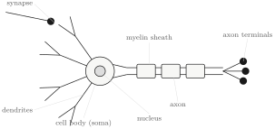
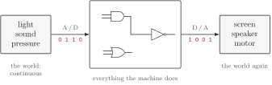
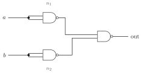
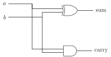
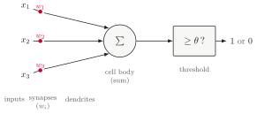

NJIT · CS 301 · INTRODUCTION TO DATA SCIENCE · FALL 2026 · UNIT I PDF
Meeting 1. The Neuron and the Gate
Act 1 The Biological Neuron · Act 2 Logic Gates and Certainty · Act 3 Computing a Neuron, Approximately
Unit I studies how an artificial neuron makes predictions and learns its parameters from examples. We begin with biological neurons and logic gates, then describe a simplified neuron model in arithmetic.
Act 1. The Biological Neuron
1.1 Neurons and cell types
The human brain contains roughly 86 billion neurons. For decades the standard figure was “100 billion” — a round number that no measurement established. A laboratory technique gave a measured estimate: dissolve brain tissue into a suspension, count the cell nuclei in samples of it, and scale up. The answer comes out near 86 billion on average — about 16 billion in the cerebral cortex and about 69 billion in the cerebellum, with variation from person to person. The estimate depends on the sampling and counting method.
Neurons are cells with many different shapes, chemical properties, connections, and responses. A recent atlas, built by reading which genes individual brain cells express, groups them into 461 clusters and 3,313 finer subclusters. Those counts include both neurons and non-neuronal cells.
Many cells share a type, and small circuits with similar arrangements also recur across the brain. This suggests a useful comparison with computers: complex systems can be built from repeated parts. Artificial neural networks also reuse small modules at a much larger scale.
The counts: Azevedo et al., J. Comp. Neurol. 513 (2009), 532–541, doi:10.1002/cne.21974. The cell-type atlas: Transcriptomic diversity of cell types across the adult human brain, Science 382 (2023), doi:10.1126/science.add7046.
1.2 What one cell does

The branching structures on the left are dendrites; the name comes from the Greek dendron, meaning tree. Signals from other neurons, chemical or electrical, arrive there, at contact points called synapses. What arrives is gathered into the cell body (the soma), and when the cell responds, the response travels down the axon — the long fiber to the right — and out through the axon terminals to other cells.
The operation of the cell, reduced to four steps:
- Signals arrive at the dendrites, at the synapses.
- Each synapse has a strength that affects its contribution to the cell’s response. Excitatory inputs increase the tendency to fire, while inhibitory inputs suppress it.
- The cell body adds up what arrives — each signal counted in proportion to the strength of the synapse it crossed.
- Past a threshold, the cell fires: a spike travels down the axon to the next cells. Below the threshold it stays quiet. The threshold is the cell’s own; different neurons have different ones.
This description simplifies the behavior of biological neurons. Act 3 models input strength, accumulation, and thresholding with arithmetic.
1.3 Biological variability and timing
Several features of biological neurons require further explanation.
- Membrane voltage is continuous. The voltage across the cell’s membrane is not restricted to two levels; it moves through every value in a range. The cell regulates this voltage within a physiological range.
- Spike rate and timing carry information. Neurons emit spikes whose rate and timing affect other cells.
- The contact is chemical. At most synapses the signal crosses the gap as a puff of neurotransmitter molecules — and the amount released can vary.
- There is noise. The same input can produce different responses. Hear the same song twice and it need not trace the same pattern through your brain each time.
- There is no global clock. Neural activity is not synchronized by a single clock. Individual spike times still carry information, with differences of milliseconds affecting responses.
- The strengths themselves change. Synaptic strengths can grow and shrink with activity and experience. These changes are part of how the brain learns.
A familiar example of adjustment: step out of a dark room into bright sunlight. At first it is overwhelming; then your visual system adjusts its sensitivity. Several mechanisms contribute, so this is not simply a change in synaptic strengths, or necessarily an example of learning.
These features — continuous voltages, noise, no global clock, and changing strengths — matter when modeling a neuron. Digital circuits also have physical voltages and noise, but they are engineered to give reliable answers in terms of just two symbols.
Act 2. Logic Gates and Certainty
2.1 Input, processing, and output
A digital computer can be described in three stages:

Sensors measure quantities such as light, sound, and pressure. These measurements are encoded as strings of bits. The processor performs operations on these bit strings to handle arithmetic, text, video, and other data. At the far boundary some of the results are converted back to the continuous world: pixels on a screen, sound from a speaker, motion in a motor. Not all of them come back out: a file written to disk or a message sent across the network stays 0s and 1s the whole way. Storage is physical too — a disk encodes each bit as the state of some small piece of solid matter — but what the physical state encodes is a discrete symbol.
Analog computers use continuous signals, and quantum computers use another model of computation. This course uses digital computers. Their processing circuits usually use a clock to coordinate when intermediate results are stored. The logic between those storage points takes time to settle. The brain of Act 1 has no such global clock.
2.2 Representing bits with voltages
Physically, a wire carries a voltage. One range is interpreted as high, or 1, and another as low, or 0. The voltages in between occur during transitions, but do not represent a valid logic value. The circuit must have time to settle before its answer is read. Small voltage changes within either valid range leave the represented bit unchanged; this is part of what makes digital computation reliable.
2.3 Three gates
The operations performed on bits are built from logic gates: small devices that, in the examples below, take one or two bits and produce one bit, by a rule small enough to write out in full.
AND answers 1 only when both inputs are 1. OR answers 1 when at least one input is 1. NOT takes a single input and answers with the other symbol. In class you filled these tables in yourself; here they are complete:
| \(a\) | \(b\) | AND |
|---|---|---|
| 0 | 0 | 0 |
| 0 | 1 | 0 |
| 1 | 0 | 0 |
| 1 | 1 | 1 |
| \(a\) | \(b\) | OR |
|---|---|---|
| 0 | 0 | 0 |
| 0 | 1 | 1 |
| 1 | 0 | 1 |
| 1 | 1 | 1 |
| \(a\) | NOT |
|---|---|
| 0 | 1 |
| 1 | 0 |
A truth table specifies the output for every possible binary input. These four rows completely define the two-input AND function. They do not describe physical details such as how long a gate takes to produce its answer.
Gates also come in wider versions: an AND with three or more inputs answers 1 exactly when all of its inputs are 1, and real chips use such gates freely because they save space. Everything in this unit works with the two-input versions, and nothing is lost.
2.4 How many kinds of part does a computer need?
Inside a real processor you would find implementations of several different logical operations — the three above, XOR, and other variants — because dedicated circuits are efficient. We can also ask which sets of gate types can express every Boolean function.
AND, OR and NOT can express any Boolean function. AND and NOT also suffice, because OR can be assembled from them: \(a\) OR \(b\) answers 0 only when both inputs are 0, which is the same as NOT (NOT \(a\) AND NOT \(b\)).
The NAND gate alone is sufficient. Its output is the negation of AND.
| \(a\) | \(b\) | NAND |
|---|---|---|
| 0 | 0 | 1 |
| 0 | 1 | 1 |
| 1 | 0 | 1 |
| 1 | 1 | 0 |
Each of the three basic gates can be written using nothing but NAND:
- NOT \(a\) = NAND\((a,a)\) — one NAND, both inputs fed from the same wire
- \(a\) AND \(b\) = NAND\(\big(\)NAND\((a,b),\,\)NAND\((a,b)\big)\)
- \(a\) OR \(b\) = NAND\(\big(\)NAND\((a,a),\,\)NAND\((b,b)\big)\)
These constructions use one, two, and three NAND gates respectively. NAND gates can therefore build all the Boolean logic a processor needs. Arrangements with feedback can also store bits.
2.5 Wiring gates together
The output of one gate can feed an input of another to form a larger circuit. The way to understand a small circuit is to trace it: fix the inputs, and push the values through gate by gate.
Example 2.1 Trace the circuit
Three NANDs, wired as below — the circuit you traced on the meeting’s worksheet. The values on the two internal wires are named \(n_1\) and \(n_2\).

Take the row \(a=0\), \(b=0\). The top gate receives \(a\) on both inputs, so \(n_1 = \text{NAND}(0,0) = 1\); likewise \(n_2 = 1\); and the output is \(\text{NAND}(1,1) = 0\). Now \(a=0\), \(b=1\): the top gate still sees \((0,0)\), so \(n_1 = 1\); the bottom gate sees \((1,1)\), so \(n_2 = 0\); and the output is \(\text{NAND}(1,0) = 1\). Before computing the row \((1,0)\), notice that the circuit is symmetric: swapping \(a\) and \(b\) swaps the roles of \(n_1\) and \(n_2\) and cannot change the output. So \((1,0)\) gives \(1\) with no further work. The last row, \((1,1)\), gives \(n_1 = n_2 = 0\) and output \(\text{NAND}(0,0) = 1\).
| \(a\) | \(b\) | \(n_1\) | \(n_2\) | out |
|---|---|---|---|---|
| 0 | 0 | 1 | 1 | 0 |
| 0 | 1 | 1 | 0 | 1 |
| 1 | 0 | 0 | 1 | 1 |
| 1 | 1 | 0 | 0 | 1 |
Read the last column: \(0,1,1,1\). This three-NAND circuit is the OR gate — it is the third identity of the previous section, verified row by row.
On paper we evaluated the gates one at a time. In hardware, \(n_1\) and \(n_2\) can settle concurrently because neither depends on the other; the final gate depends on both. Also notice the shortcut for \((1,0)\): spotting a symmetry can save a calculation. We will use it again in Act 3.
Example 2.2 The same method, for AND
The second identity of §2.4 says that AND is two NANDs: the first takes \(a\) and \(b\), and the second takes the first’s output on both of its inputs. Drawn as a circuit, with the one internal wire named \(n_1\):
Use the method of Example 2.1: fix the inputs, evaluate the gates in dependency order, and record the value on each internal wire. For \((0,0)\): \(n_1 = \text{NAND}(0,0) = 1\), and the output is \(\text{NAND}(1,1) = 0\). For \((0,1)\) and \((1,0)\): \(n_1 = 1\) again, so the output is \(0\) again. For \((1,1)\): \(n_1 = \text{NAND}(1,1) = 0\), and the output is \(\text{NAND}(0,0) = 1\).
| \(a\) | \(b\) | \(n_1\) | out |
|---|---|---|---|
| 0 | 0 | 1 | 0 |
| 0 | 1 | 1 | 0 |
| 1 | 0 | 1 | 0 |
| 1 | 1 | 0 | 1 |
The last column is \(0,0,0,1\): AND. Notice what the second gate is doing: fed the same value on both inputs, a NAND simply inverts it, which is the first identity of §2.4 (NOT \(a\) = NAND\((a,a)\)) appearing as a part of a larger circuit. Each identity can be checked by tracing the intermediate values for every input.
2.6 The ideal gate model
In the ideal logic model, a two-input gate’s four-row table specifies its entire input-output behavior.
- The same binary inputs give the same answer, every time.
- The output of an individual combinational gate depends only on its current inputs.
- In a synchronous circuit, the clock allows time for answers to settle before they are stored.
Real gates are designed to implement that model reliably within their operating limits. They can fail, but their intended rule does not change with experience. Synaptic strengths, by comparison, can change with learning.
2.7 A gate you can run
A gate is fixed hardware. But an entire computer is built out of gates, programming languages run on the computer — and in a programming language you can write the gate back down as code:
class AndGate:
def __call__(self, a, b):
return 1 if (a == 1 and b == 1) else 0
gate = AndGate()
for a, b, expected in [(0,0,0), (0,1,0), (1,0,0), (1,1,1)]:
assert gate(a, b) == expected
The loop checks the class against every row of the truth table. A gate class that passes its own truth table is correct for all of its binary inputs. This is one consequence of a gate’s exactness: its specification is complete, and small enough to test in full.
Notice also the loop in the construction itself: physical gates make a processor, the processor runs Python, and inside Python we have just rebuilt a gate — as software. Put enough of these software gates together and you could simulate an entire computer, inside the computer. Engineers use circuit simulation to check chip designs before anything is manufactured, although their tools model more hardware detail than these Python classes.
Act 3. Computing a Neuron, Approximately
3.1 Gates can count
Wired together, gates do arithmetic. Two of them add one bit to one bit:

The XOR gate (1 when exactly one input is 1) produces the sum bit, and an AND produces the carry — check it against \(1+1\), which is \(10\) in binary: sum \(0\), carry \(1\). This circuit is a half adder. To add longer binary numbers, each position must also accept the carry from the preceding position. A full adder does that; it can be built from two half adders and an OR gate. Chain full adders and you can add 64-bit numbers. Multiplication is shifting and adding; comparison, subtraction, and the rest of arithmetic follow. These arithmetic circuits are built from logic gates.
Arithmetic was a major purpose of early computers. A pocket calculator is a familiar use of the same idea: gates carrying out arithmetic. (A game to play with one: type a large positive number and press the square-root key repeatedly. The display marches toward 1 — fast at first, then very slowly. Working out why it slows down is a good exercise for later in the course.)
3.2 Implementing a neuron model
The computer already performs additions, multiplications, and comparisons. We can use those operations to write a model of a neuron as a program.
3.3 The cell, written as arithmetic
Return to the four-step description of Act 1, and translate each step — in order — into a piece of arithmetic. This is a modeling step: deciding what each biological feature becomes, as a number or an operation.
| signals cross the synapses | inputs \(x_1,\ldots,x_n\) |
| each synapse has a strength | a weight \(w_i\) for each input |
| the cell body adds what arrives | \(w_1x_1 + w_2x_2 + \cdots + w_nx_n\) |
| it fires past a threshold | output \(1\) if the sum is \(\geq \theta\), else \(0\) |
In prose: the incoming signals become numbers \(x_1, \ldots, x_n\) — real numbers, since the signals they stand for are continuous. Each synapse’s strength becomes a number too, the weight \(w_i\): a larger weight gives an input a larger contribution to the sum, while a weight near zero gives it little influence. For a positive input, a negative weight pushes the cell away from firing. The cell body’s gathering becomes multiplication and addition — each input counted in proportion to its weight — and the firing decision becomes a comparison against the threshold, denoted by \(\theta\).
The standard summation notation for this weighted sum is:
The whole object — inputs, weights, sum, threshold — drawn as one device:

Three inputs are drawn; there could be any number. Notice that the picture is the neuron of Act 1 with every part replaced by its arithmetic counterpart — and that the weights and the threshold are the parameters we choose.
Example 3.1 Does it fire?
Fix a unit with three inputs, weights \(w = (2,\, -1,\, 2)\), and threshold \(\theta = 3\) — the unit from the meeting’s worksheet. For each input, form the weighted sum and compare it with \(\theta\).
For \(x = (1, 0, 1)\): the sum is \(2\cdot 1 + (-1)\cdot 0 + 2\cdot 1 = 4\), and \(4 \geq 3\), so the unit fires: output \(1\).
For \(x = (1, 1, 1)\): the sum is \(2 - 1 + 2 = 3\) — exactly the threshold. The rule includes equality, so the output is \(1\). Raising the threshold to \(3.5\) changes this row’s output to \(0\) and leaves the other three outputs unchanged.
For \(x = (0, 1, 1)\): the sum is \(0 - 1 + 2 = 1 < 3\). Silent: output \(0\).
For \(x = (1, 1, 0)\): no arithmetic needed. The first and third weights are equal, so swapping \(x_1\) and \(x_3\) cannot change the sum — this is the same symmetry shortcut as in Example 2.1. The sum is again \(1\), and the output \(0\).
| \(x_1\) | \(x_2\) | \(x_3\) | sum | out |
|---|---|---|---|---|
| 1 | 0 | 1 | 4 | 1 |
| 1 | 1 | 1 | 3 | 1 |
| 0 | 1 | 1 | 1 | 0 |
| 1 | 1 | 0 | 1 | 0 |
One more question: which function is this? For binary inputs, it is AND on \(x_1\) and \(x_3\), regardless of \(x_2\). When both are 1, the sum is either 4 or 3, so the unit fires. If either is 0, the sum is at most 2. Check the remaining four rows to complete the truth table.
3.4 McCulloch and Pitts, 1943
In 1943 Warren McCulloch, a neurophysiologist, and Walter Pitts, a logician, proposed an early threshold model with binary signals and excitatory and inhibitory inputs. Our unit with adjustable numerical weights is a related, more flexible model. Their collaboration is an early example of the connections between neuroscience, mathematics, logic, and computing.
Their work connected neuron models with logic. In the notation we use here, the main ideas are:
- Weights and threshold can be chosen so that one unit reproduces a named gate exactly. There is a setting for AND, a setting for OR, a setting for NOT, a setting for NAND. (Try to find some of these settings yourself — for AND with two inputs, what weights and threshold work?)
- Wired into networks, such units can compute any logical function — so a complete computing machine could, in principle, be assembled from them.
The connection is useful in both directions: gates perform the arithmetic of a neuron model, and a neuron model with suitable parameters can reproduce a gate’s logic.
W. S. McCulloch and W. Pitts, “A logical calculus of the ideas immanent in nervous activity,” Bulletin of Mathematical Biophysics 5 (1943), 115–133.
3.5 Assumptions of the model
The model represents weighted inputs, accumulation, a threshold, and a binary response. It omits spike timing, firing rate, chemistry, and noise, and returns one output for each supplied input. The model allows real-valued inputs and weights; a computer represents them with finite precision.
An MP3 is a useful analogy: a sampled, compressed recording leaves out some information, yet it can preserve much of what we enjoy in the music. Similarly, a simplified neuron can retain useful structure without reproducing every biological detail.
(The class also raised a broader question: could continuous, or even quantum, details of the biology matter for understanding the mind and consciousness? Our threshold model does not answer that question. Here we are studying what a simplified model can do.)
The model used here has fixed weights chosen by hand, including every weight in Example 3.1. Learning would require a procedure that adjusts these weights using examples.
3.6 Learning from errors
One more thread from the meeting: give yourself opportunities to learn from mistakes. Trying something, checking it, and adjusting helps you discover what you do and do not understand. There is a useful parallel with artificial neural networks: training repeatedly scores their outputs and adjusts their weights. People learn in more ways than this, but the practical advice holds: do the work, inspect your errors, and try again.
The class also made a rough energy comparison. A human brain runs on about 20 watts, or about 175 kilowatt-hours over a year. For scale, a hypothetical training run using a million kilowatt-hours would use as much energy as roughly 5,700 years at that power. That compares energy, not years of learning: a brain uses energy for much more than education, and model training costs vary widely. When using computational tools, make your own attempts and examine the errors you find.
Act 4. Practice
4.1 Biological analogues
Matching. Match each component of the artificial neuron to its biological analogue.
Components: input value; weight; weighted sum; threshold comparison.
Analogues: synaptic strength; incoming activity; combined effect of incoming signals; condition for firing.
4.2 A circuit built from NAND gates
Multiple choice. Which Boolean function does this circuit compute?
Choices: AND; OR; XOR; NAND. Explain your choice without writing the complete truth table.
4.3 What a truth-table test establishes
Multiple choice. A proposed two-input AND gate passes all four rows of its truth table. What does this establish?
- It computes AND correctly for every binary input pair.
- It behaves correctly for every pair of real-valued inputs.
- Its weights and threshold are the only possible choices.
- It reproduces the behavior of a biological neuron.
4.4 Information omitted by the representation
Short explanation. Two patterns of incoming spikes differ in their timing, but our representation assigns them the same input vector. Can a fixed weighted-threshold neuron distinguish them? Explain what this reveals about the representation.